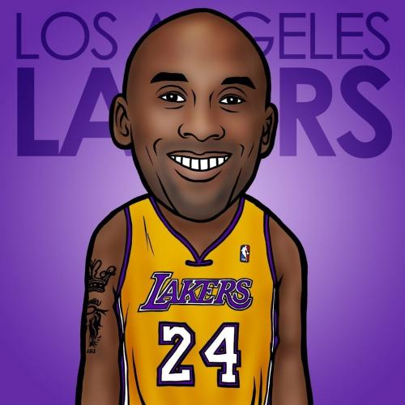
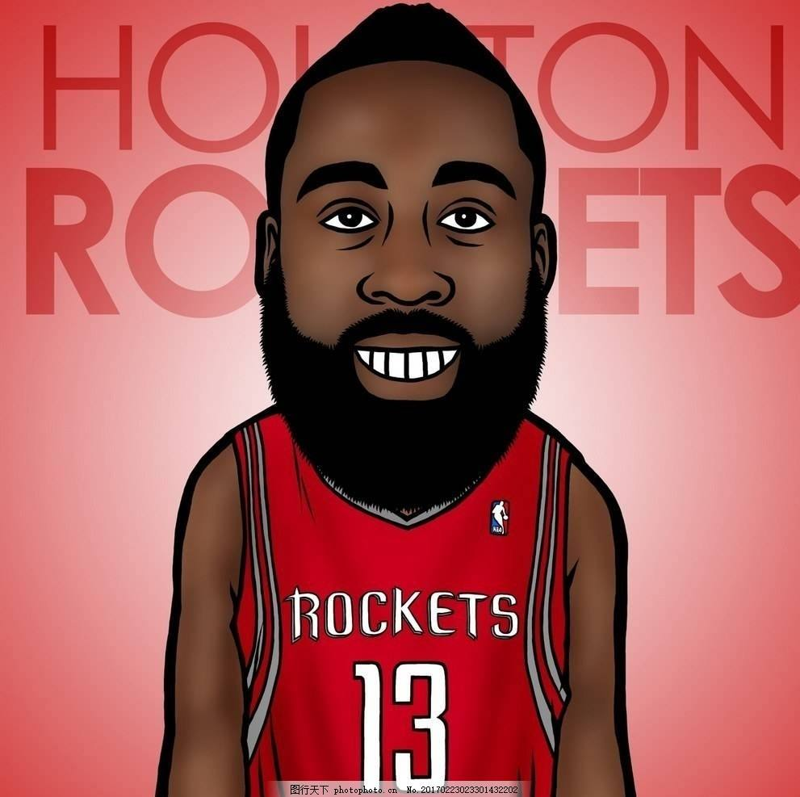
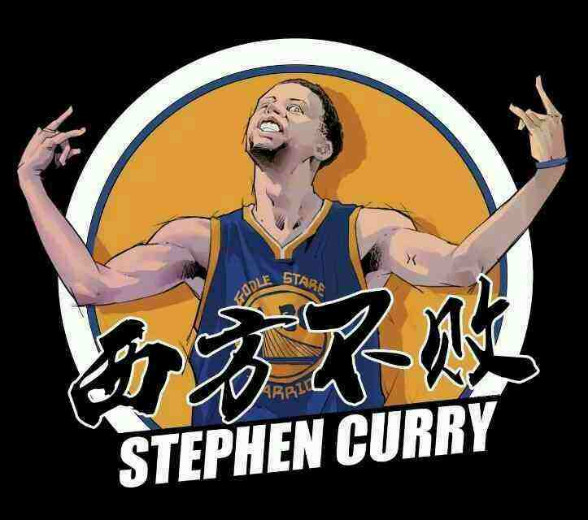

科比-布莱恩

1.科比·布莱恩特（Kobe Bryant），1978年8月23日出生于美国宾夕法尼亚州费城，前美国职业篮球运动员，司职得分后卫/小前锋（锋卫摇摆人），绰号“黑曼巴”/“小飞侠”
2.整个NBA生涯（1996年-2016年）全部效力于NBA洛杉矶湖人队，是前NBA球员乔·布莱恩特的儿子 .
3.科比是NBA最好的得分手之一，生涯赢得无数奖项 ，突破、投篮、罚球、三分球他都驾轻就熟，几乎没有进攻盲区，单场比赛81分的个人纪录就有力地证明了这一点。除了疯狂的得分外，科比的组织能力也很出众，经常担任球队进攻的第一发起人。另外科比还是联盟中最好的防守人之一，贴身防守非常具有压迫性
4.2016年4月14日，科比·布莱恩特在生涯最后一场主场对阵爵士的常规赛后宣布退役.2017年12月19日，湖人主场对阵勇士，中场时刻为科比的8号和24号2件球衣举行了退役仪式。2018年3月13日，科比凭借和动画师格兰·基恩合作的短片《亲爱的篮球》获得第90届奥斯卡最佳短片奖.
詹姆斯-哈登

1.詹姆斯·哈登（James Harden），1989年8月26日出生于美国加利福尼亚州洛杉矶（ Los Angeles, California），美国职业篮球运动员，司职后卫，效力于NBA休斯顿火箭队。
2.詹姆斯·哈登于2009年通过选秀进入NBA，先后效力于雷霆队和火箭队，新秀赛季入选最佳新秀第二阵容，2011-12赛季当选最佳第六人，3次入选最佳阵容第一阵容，6次入选全明星阵容，2017-18赛季荣膺常规赛MVP。
3.詹姆斯·哈登于2012年随美国男篮获伦敦奥运会金牌，2014年随美国队获西班牙篮球世界杯冠军。
斯蒂芬-库里

1.斯蒂芬·库里（Stephen Curry），1988年3月14日出生于美国俄亥俄州阿克伦（Akron,Ohio），美国职业篮球运动员，司职控球后卫，效力于NBA金州勇士队.
2.斯蒂芬·库里于2009年通过选秀进入NBA后一直效力于勇士队，新秀赛季入选最佳新秀第一阵容；2014-15、2016-17、2017-18赛季三次随勇士队获得NBA总冠军；两次当选常规赛MVP，两次入选最佳阵容第一阵容，5次入选全明星赛西部首发阵容。
3.斯蒂芬·库里于2010年随美国队获土耳其世锦赛冠军，2014年随美国队获西班牙篮球世界杯冠军。